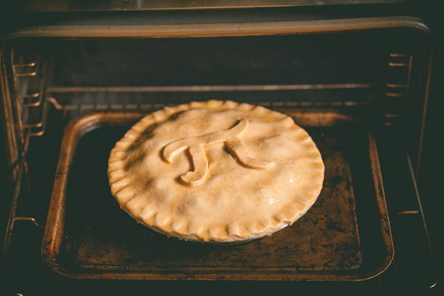

Shepherd's Pie

Photo by Rob Wicks on Unsplash
Description
This hearty shepherd's pie using only vegan ingredients is a take on a british staple but cruelty-free.
Ingredients
- 5 potatoes
- 1/4 cup of soy milk
- 1 large onion
- 1 oz plant-based beef substitute
Steps
- Boil potatoes in pot for 25 minutes
- Stir olive oil and vegan cream cheese, and mash with the potatoes
- Stir fry all of your chosen vegetables such as onions
- Add the stir fry with gravy and add the potato layer on top
- Cook for 20 miutes
Home